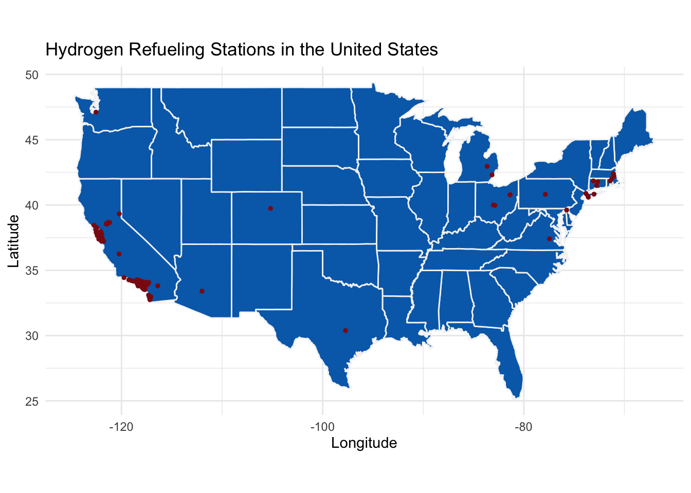

Blog Post
Decarbonizing Long Haul Trucking
Headlines of increasing Tesla sales and emerging fuel cell technologies have flooded the media. Significant progress has been made with non-gasoline cars. However, less than one percent of cars in the US currently are electric cars. Most of the focus on electrification has been on cars, leading to millions of EVs being sold worldwide. Arguably more important than cars sold, thousands and thousands of charging stations have been implemented. In addition, plans and estimates show the charging infrastructure in the United States will increase significantly in future years. In contrast, only a handful of hydrogen refueling stations have been created in the last decade. While electric car sales are increasing rapidly, hydrogen car sales have actually decreased. Personal vehicle consumers care deeply about the accessibility of charging stations, so electric vehicles have a clear advantage. Hydrogen refueling stations cost millions to make, and every EV owner has a connection to the grid, making charging capital costs essentially free. This, along with other reasons, makes it clear that electric cars are the future. In heavy-duty trucking, the market penetration of more sustainable technology is almost non-existent. The unanswered question is whether the future of trucking will be electric, hydrogen, or diesel. I would argue that electric long haul trucking is improbable, and the US subsidies for electrolysis can allow for hydrogen fuel cell trucks to dominate long haul trucking.
The advantage of electric trucks is that electric engines are cheaper to produce. The components of an electric engine consist of the batteries and the motor, while hydrogen trucks also need an expensive fuel cell. This often will result in electric trucks being cheaper than hydrogen trucks. This could change in the future, however, because of the shortages in batteries and lithium. Over the last few years, the price of lithium has increased more than tenfold. With battery production only accelerating, the future of lithium prices appears to only be going up. Because electric trucks would need significantly more batteries than fuel cell trucks, the cost advantage of electric trucks could subside. A large percentage of personal EVs cost is its batteries, and a truck’s battery pack would contain five times the amount of energy as a regular battery pack. Additionally, as technology for fuel cells continues to develop, the cost advantage for producing trucks will no longer be as important in the future.
Another advantage of electric trucks is the infrastructure for charging is much more widespread than hydrogen charging. Currently, there are about 45,000 charging stations in the United States, compared to only 39 publicly available hydrogen stations. The large head start of the charging infrastructure does provide an advantage for electric trucks, however, this advantage is significantly less than with passenger cars. Much of the charging infrastructure is in cities and is not optimized for long-haul trucking. In addition, almost all current charging stations are geared towards passenger vehicles, which trucks would be unable to use. Charging stations are admittedly significantly cheaper than hydrogen stations, but trucks need significantly fewer refueling stations than passenger vehicles. There are only 2,500 truck stops, compared to over 100,000 gasoline stations in the United States. While it is true that hydrogen infrastructure is much more expensive, the infrastructure is less of a concern for long-haul trucking.
Similar to electric planes, weight is a large concern for electric trucks. The max amount of weight that a vehicle can weigh is 80,000 pounds. Because batteries are so heavy, a hydrogen fuel cell can carry more payload than an electric truck. More available weight to carry is more valuable, providing a barrier for electric trucks in the market. Hydrogen trucks, on the other hand, have fuel that is significantly lighter than diesel.
Another barrier for electric trucks is that refueling time is significant. Waiting an hour to charge up a truck is extremely inefficient, and will likely lead to a delayed transition away from diesel fuel. Instead, it is imperative to make hydrogen trucking economically feasible and to build infrastructure to allow for the transition. Making hydrogen fuel clean and cheaper is vital to ensure a quick transition away from oil. To do this, the feedstock for hydrogen electrolysis, electricity, needs to be made cheaper for hydrogen companies. The National Renewable Energy Laboratory estimates that energy costs make up about 58-67 percent of hydrogen electrolysis costs. Eliminating these costs would make the cost of hydrogen drop significantly, making it competitive with gasoline. In order to eliminate these costs, hydrogen electrolysis plants should operate on curtailed renewable energy. In California between 2016 and 2017, curtailment increased by 65 percent. In the future, small hydrogen electrolysis plants can use negatively priced electricity during the day to power electrolysis to produce cheap, zero-emission fuel for long-haul trucking. To ensure this transition, the United States needs to aggressively subsidize hydrogen electrolysis plants through an ITC type of subsidy. An overproduction of hydrogen will allow for hydrogen producers to produce at a low capacity and still meet demand. Producing at a low capacity factor allows producers to take advantage of flexible loads, and receive electricity for negative prices. By implementing a subsidy on electrolysis, the price of hydrogen will plummet, and the switch from diesel to hydrogen will be expedited. Trucks’ transition away from diesel is critical for a cleaner future, and hydrogen fuel cells with hydrogen electrolysis provide a unique opportunity to clean the freight sector.